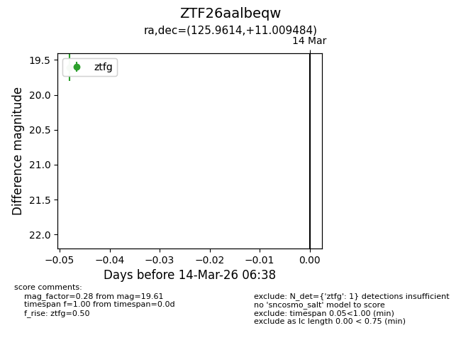
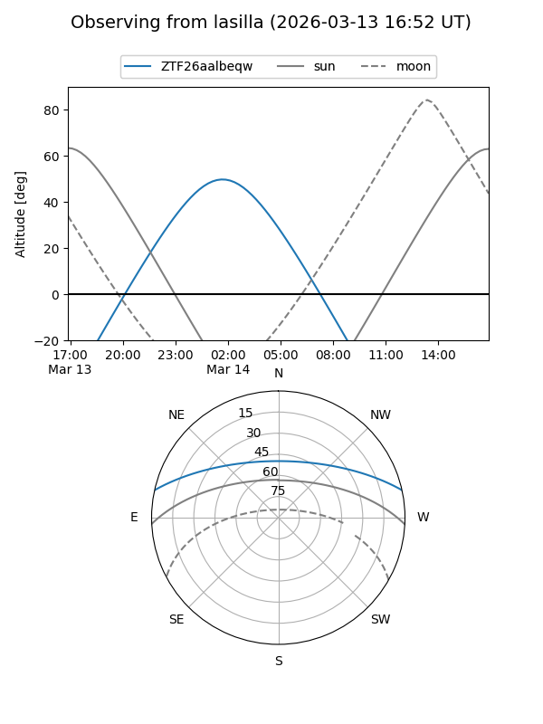
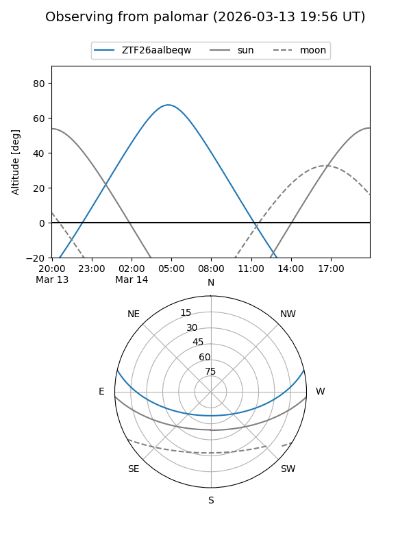

ZTF26aalbeqw
Target ZTF26aalbeqw at 2026-03-14 06:40
Aliases and brokers:
FINK: link
Lasair: link
ALeRCE: link
alt names
ZTF26aalbeqw (ztf,fink_ztf)
Coordinates:
equatorial (ra, dec) = 125.9614,+11.00948
equatorial (HMS+DMS) = 08:23:50.73,+11:00:34.14
galactic (l, b) = (213.2910,+25.45839)
Flags:
Photometry:
last ztfg=19.61
1 ztfg detections
Lightcurve

Visibility


Additional plots